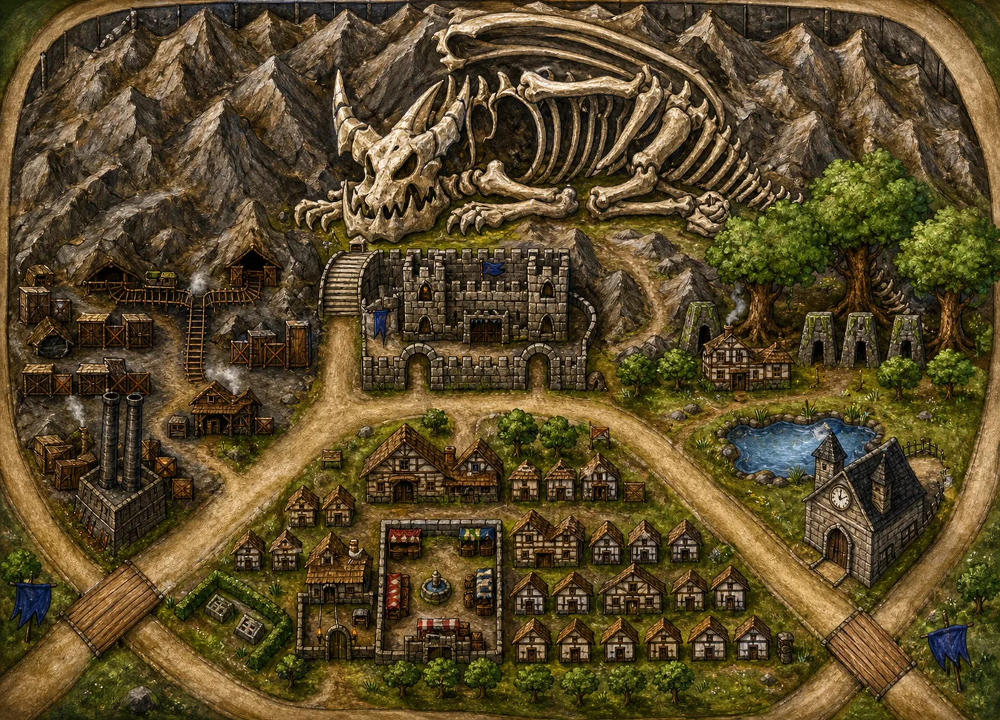

Every map from Arda, original and remastered, side by side.
A book-style atlas of the world of Arda - seven sundered continents, charted one map at a time. Each page shows the original hand-drawn scan alongside the Warcraft-style remaster, with location notes, region and lore.
Drag to compare Slide between the original drawing and the painted remaster on every page.
Location notes Region, type, landmarks and campaign lore on the facing page.
Growing archive 400+ maps to be added over time as they are scanned and remastered.

The sundering of Arda
Why the atlas is organised by continent, and how much of the world is still uncharted.
World lore - from the author
Arda was originally a massive pangaea, but after a night of disaster when the world was still young, current-day Arda is now broken up into seven geographically distinct continents.
The author, on the shape of the world
Every map in this archive belongs to one of those seven landmasses. The atlas is grouped the same way, so each continent keeps its own run of pages as it is scanned and remastered. Six of the seven are still to be charted here.
The seven continents
IContinent One Home of the humans - seat of the ruling King
IIUncharted
IIIUncharted
IVUncharted
VUncharted
VIUncharted
VIIUncharted
Atlas pages
Drag the slider on each map to compare the original hand-drawn scan with the remastered version.
Continent I of VII
Continent One
The main continent of Arda: home of the humans, and seat of power of the current ruling King. Its royal capital sits in Stormwind District, at the end of a paved processional causeway. Continent name awaiting the author
An iron-mining city built around one of the last intact dragon skeletons in Arda.
Location
Known settlement
Region
Northern mountain basin
Landmark
Dragon skeleton above the city fortress
Type
Mining city - Iron
Status
Remastered
CityMiningDragon remainsFortifiedMountains
The city grew up around the bones of the last great dragon. The fortress walls were built from the stone of the mountain the dragon fell into. Iron veins run deep beneath.
A timber village on a green shelf deep inside a walled valley of grey rock, reached by a single bridge over the river.
Location
Known settlement
Region
Enclosed mountain valley
Landmark
Ruined bell tower and roofless abbey
Type
Village - highland
Status
Remastered
VillageValleyRuinsMineForestRiver
On the map: roughly twenty timber cabins and a longhouse sit on grassland ringed by sheer cliffs. A broken stone tower and a roofless abbey stand at the northern end. A plank bridge crosses the river to dense conifer forest on the west bank; a mine adit opens high in the northern rock face at the top of a switchback path, with a second cave mouth in the eastern cliff. Crop plots and a barn close off the southern end above the coast.
The wider farmland region around Dragonfall, laid out along cart roads radiating from a moated stone ring.
Location
Known region
Region
Coastal lowland farmland
Landmark
Moated stone ring at the district's heart
Type
District - agricultural
Status
Remastered
DistrictFarmlandCastleStanding stonesWindmill
On the map: a circular stone ring enclosed by a water channel sits at the centre, with grain fields and cottages pressed up against it. A red-bannered castle holds the northern bluff above a rocky shore; a walled burial compound sits opposite it to the north-east. A palisaded tent camp and a second banner ground lie west of the ring, a windmill hamlet in the south-west, and a cluster of round thatched huts with field strips in the south-east. Watchtowers, ruins, lakes and cave mouths are scattered between.
Arid badlands of mesas and cactus scrub, held by a stone fortress in the north and warrens in the hills.
Location
Known region
Region
Mesa badlands
Landmark
Fungal forest and the black obelisk
Type
District - frontier
Status
Remastered
DistrictBadlandsFungal forestFortressWarrens
On the map: the harshest district charted so far. A forest of enormous red and blue mushrooms grows on pink-stained ground beside the river in the north-west. A grey stone fortress with an open fighting pit commands the northern road. To the west, a carved mesa stronghold stands over a black obelisk; hill warrens topped with tusked totems and hide huts occupy the eastern rises. Cactus, mesa stumps, thicket blocks, a cave mouth and a lone windmill fill the dry ground between, with autumn woodland along the north.
A drowned coastline of islands and straits, stitched together by one long causeway road and a working port.
Location
Known region
Region
Coastal archipelago
Landmark
Northern lighthouse and the strait causeway
Type
District - maritime
Status
Remastered
DistrictArchipelagoPortLighthouseCauseway
On the map: more water than land. A lighthouse crowns the northernmost islet beside a round walled watch-fort, and a single road runs the length of a narrow peninsula from there to the southern shore. The port town at the centre pushes a dozen timber piers out into the strait. A small isle mid-channel holds a ruined chapel among crags; the eastern shore carries forested hamlets and watchtowers. A southern town with a chapel and hedge maze connects onward by a long timber trestle bridge. A dead tree marks the north-eastern island.
The royal capital district and seat of power of the current ruling King, built along a single paved processional way.
Location
Known region - royal seat
Region
Northern coast of Continent One
Landmark
The processional causeway and the cathedral city
Type
Capital district
Status
Remastered
CapitalRoyal seatCathedralCausewayGarrison
On the map: the seat of the kingdom. A white and gold spired city with blue roofs occupies the whole northern coast, and one broad paved causeway runs the entire length of the map from its main gate, broken by three fortified barbicans flying blue royal banners. A colossal ancient tree stands in the western woods above a district of pale towers. Military encampments in blue line the west and the barbican approaches; a red-and-white striped tournament pavilion sits east. Foundries with smoking chimneys and an artillery emplacement hold the north-east and the southern edge, with field strips beyond.
A warm palm-grown basin fed by tiered waterfalls, overlooked by a city terraced into the rock.
Location
Known region
Region
Tropical river basin
Landmark
The tiered falls and the arched aqueduct
Type
District - tropical
Status
Remastered
DistrictTropicalWaterfallsAqueductHill city
On the map: the only landscape page in the district set, and the only tropical one. Water steps down from a mountain lake in the north-west over several falls into the river that feeds the basin. A great arched stone bridge carries the northern road over a waterfall at the top of the map. A blue-bannered city climbs the rock in tiers at the north-east corner above its own harbour. Palm groves cover the central plain; a blue-bannered keep with a drill yard stands west of centre, cave mouths and grottoes open in the western massif, and blossoming orchards, fenced pasture and a southern gatehouse close the basin.
A great lake and its braided marsh delta, with a castle on the summit above and a walled island city below.
Location
Known settlement
Region
Lakeland and wetland delta
Landmark
Summit castle and the ringed island city
Type
Lakeland - mixed settlement
Status
Remastered
WetlandDeltaLakeSummit castleStilt village
On the map: open lake fills the north. A sheer grey mountain rises from its eastern shore with a castle on the very summit, a cliffside village on ledges below it beside two waterfalls, and a switchback road climbing between them. West and south of the lake the land dissolves into reed channels and islets carrying stilt villages, huts and ruins among palm and willow. A circular walled island city sits in the river mouth at the south-east corner; a walled barracks compound and a watchtower hold the southern approach. A fishing boat is drawn up on the eastern shore, and a cave opens at the mountain's foot.
A narrow farming isthmus of blossom woods and tilled strips, running south from an active volcano.
Location
Known region
Region
Volcanic isthmus
Landmark
Crater volcano and the great white tree
Type
District - agricultural
Status
Remastered
DistrictVolcanoBlossom woodsFarmlandManor
On the map: a smoking volcano closes the northern end, its crater lake feeding a river that runs almost dead straight down the centre of the district and is crossed by three timber bridges. Pink and white blossom woodland spreads across the north and west, with a great white-canopied tree at its heart. A blue-bannered stone keep with two round palisaded granaries stands east of the river; a blue-bannered walled castle and tent camp hold the west shore. A pink manor and its walled estate fields sit to the east. Broad tilled strips fill the centre and south, with a barrel-stacked timber warehouse in the south-west and mine works below the volcano. Sea on both flanks.
Lore awaiting author notes
About this atlas
Original and remaster Every page keeps both versions. Drag the slider to compare them directly without leaving the page.
Grouped by continent Arda's seven sundered continents each get their own run of pages. Continent One is charted first; the other six follow as their maps are scanned.
Page numbers are permanent Each map keeps the page number it was given when it entered the archive. Pages are never renumbered, so a reference stays valid forever.
Location known? Each entry notes whether the location is confirmed in the world of Arda, or still being charted and discovered.
Author's lore pending Where a page shows "lore awaiting author notes", the description records only what is visibly drawn on the map. The author's own lore replaces it as it arrives.
Growing over time 400+ hand-drawn maps to be added as they are scanned and converted. New pages will appear here as each one is done.
Scroll or pinch to zoom - drag to pan - double-click to toggle